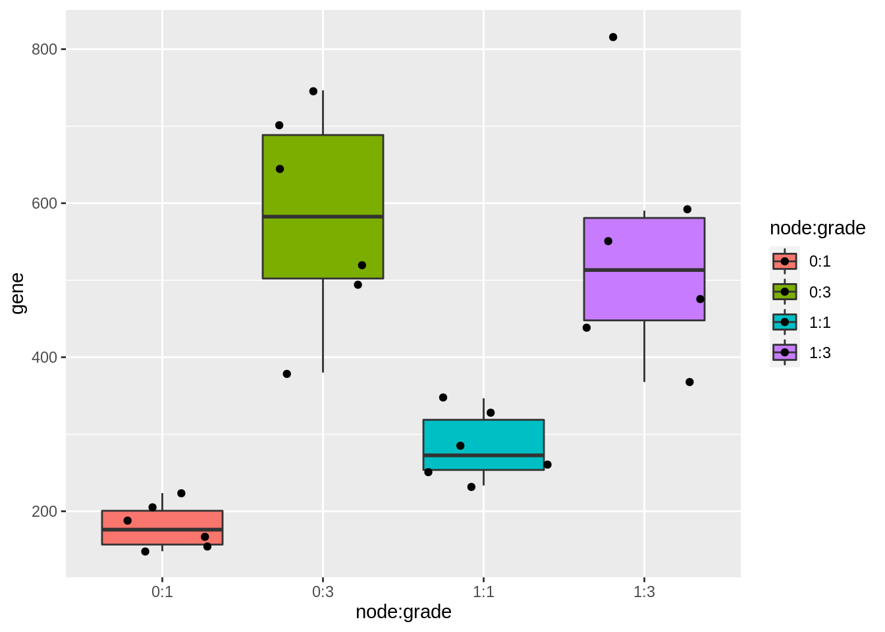

Experimenteel Design II: replication en power - KPNA2
Lieven Clement & Alexandre Segers
statOmics, Ghent University (https://statomics.github.io)

library(ggplot2)
library(tidyverse)## ── Attaching packages ─────────────────────────────────────── tidyverse 1.3.1 ──## ✔ tibble 3.1.6 ✔ dplyr 1.0.8
## ✔ tidyr 1.2.0 ✔ stringr 1.4.0
## ✔ readr 2.1.2 ✔ forcats 0.5.1
## ✔ purrr 0.3.4## ── Conflicts ────────────────────────────────────────── tidyverse_conflicts() ──
## ✖ dplyr::filter() masks stats::filter()
## ✖ dplyr::lag() masks stats::lag()1 Background
Histologic grade in breast cancer provides clinically important prognostic information. Researchers examined whether histologic grade was associated with gene expression profiles of breast cancers and whether such profiles could be used to improve histologic grading. In this tutorial we will assess the association between histologic grade and the expression of the KPNA2 gene that is known to be associated with poor BC prognosis. The patients, however, do not only differ in the histologic grade, but also on their lymph node status. The lymph nodes were not affected (0) or chirugically removed (1).
- Redo data analysis (you can copy the results of the tutorial on multiple linear regression)
- What is the power to pick up each of the contrasts when their real effect sizes would be equal to the effect sizes we observed in the study?
- How does the power evolves if we have 2 upto 10 repeats for each factor combination of grade and node when their real effect sizes would be equal to the ones we observed in the study?
- What is the power to pick up each of the contrasts when the FC for grade for patients with unaffected lymph nodes equals 1.5 (\(\beta_g = log2(1.5)\))?
2 Data analysis
2.1 Import KPNA2 data in R
kpna2 <- read.table("https://raw.githubusercontent.com/statOmics/SGA21/master/data/kpna2.txt",header=TRUE)
kpna2Because histolic grade and lymph node status are both categorical variables, we model them both as factors.
kpna2$grade <- as.factor(kpna2$grade)
kpna2$node <- as.factor(kpna2$node)kpna2 %>%
ggplot(aes(x=node:grade,y=gene,fill=node:grade)) +
geom_boxplot(outlier.shape = NA) +
geom_jitter()
As discussed in a previous exercise, it seems that there is both an effect of histologic grade and lymph node status on the gene expression. There also seems to be a different effect of lymph node status on the gene expression for the different histologic grades.
As we saw before, we can model this with a model that contains both histologic grade, lymph node status and the interaction term between both. When checking the linear model assumptions, we see that the variance is not equal. Therefore we model the gene expression with a log2-transformation, which makes that all the assumptions of the linear model are satisfied.
#Model with main effects for histological grade and node and grade x node interaction
fit <- lm(gene~grade*node,data=kpna2)
summary(fit)##
## Call:
## lm(formula = gene ~ grade * node, data = kpna2)
##
## Residuals:
## Min 1Q Median 3Q Max
## -201.748 -53.294 -6.308 46.216 277.601
##
## Coefficients:
## Estimate Std. Error t value Pr(>|t|)
## (Intercept) 180.51 44.37 4.068 0.0006 ***
## grade3 401.33 62.75 6.396 3.07e-06 ***
## node1 103.98 62.75 1.657 0.1131
## grade3:node1 -145.57 88.74 -1.640 0.1166
## ---
## Signif. codes: 0 '***' 0.001 '**' 0.01 '*' 0.05 '.' 0.1 ' ' 1
##
## Residual standard error: 108.7 on 20 degrees of freedom
## Multiple R-squared: 0.7437, Adjusted R-squared: 0.7052
## F-statistic: 19.34 on 3 and 20 DF, p-value: 3.971e-06plot(fit)


fit <- lm(gene %>% log2~grade*node,data=kpna2)
plot(fit)


When checking the significance of the interaction term, we see that it is significant on the 5% significance level. We therefore keep the full model.
library(car)## Loading required package: carData##
## Attaching package: 'car'## The following object is masked from 'package:dplyr':
##
## recode## The following object is masked from 'package:purrr':
##
## someAnova(fit,type="III")As we are dealing with a factorial design, we can calculate the mean gene expression for each group by the following parameter summations.
ExploreModelMatrix::VisualizeDesign(kpna2,~grade*node)$plotlist## [[1]]
The researchers want to know the power for testing following hypotheses (remark that we will have to adjust for multiple testing):
- Log fold change between histologic grade 3 and histologic grade 1 for patients with unaffected lymph nodes (=0).
\[H_0: \log_2{FC}_{g3n0-g1n0} = \beta_{g3} = 0\]
- Log fold change between histologic grade 3 and histologic grade 1 for patients with removed lymph nodes (=1).
\[H_0: \log_2{FC}_{g3n1-g1n1} = \beta_{g3} + \beta_{g3n1} = 0\]
- Log fold change between unaffected and removed lymph nodes for patients of histologic grade 1.
\[H_0: \log_2{FC}_{g1n1-g1n0} = \beta_{n1} = 0\]
- Log fold change between unaffected and removed lymph nodes for patients of histologic grade 3.
\[H_0: \log_2{FC}_{g3n1-g3n0} = \beta_{n1} + \beta_{g3n1} = 0\]
- Difference in log fold change between patients of histological grade 3 and histological grade 1 with removed lymph nodes and log fold change between patients between patients of histological grade 3 and histological grade 1 with unaffected lymph nodes.
\[H_0: \log_2{FC}_{g3n1-g1n1} - \log_2{FC}_{g3n0-g1n0} = \beta_{g3n1} = 0\] which is an equivalent hypotheses with \[H_0: \log_2{FC}_{g3n1-g3n0} - \log_2{FC}_{g1n1-g1n0} = \beta_{g3n1} = 0\]
We can test this using multcomp, which controls for multiple testing.
library(multcomp)## Loading required package: mvtnorm## Loading required package: survival## Loading required package: TH.data## Loading required package: MASS##
## Attaching package: 'MASS'## The following object is masked from 'package:dplyr':
##
## select##
## Attaching package: 'TH.data'## The following object is masked from 'package:MASS':
##
## geysermcp <- glht(fit,linfct = c("grade3 = 0","grade3 + grade3:node1 = 0", "node1 = 0","node1 + grade3:node1 = 0", "grade3:node1 = 0"))
summary(mcp)##
## Simultaneous Tests for General Linear Hypotheses
##
## Fit: lm(formula = gene %>% log2 ~ grade * node, data = kpna2)
##
## Linear Hypotheses:
## Estimate Std. Error t value Pr(>|t|)
## grade3 == 0 1.6675 0.1827 9.127 < 0.001 ***
## grade3 + grade3:node1 == 0 0.8928 0.1827 4.886 < 0.001 ***
## node1 == 0 0.6577 0.1827 3.600 0.00708 **
## node1 + grade3:node1 == 0 -0.1170 0.1827 -0.640 0.89821
## grade3:node1 == 0 -0.7748 0.2584 -2.998 0.02660 *
## ---
## Signif. codes: 0 '***' 0.001 '**' 0.01 '*' 0.05 '.' 0.1 ' ' 1
## (Adjusted p values reported -- single-step method)We get a significant p-value for the first, second, third and fifth hypothesis. The fourth hypothesis is not significant at the overall 5% significance level.
3 Power of the tests for each of the contrasts
3.1 Simulation function
Function to simulate data similar to that of our experiment under our model assumptions.
simFastMultipleContrasts <- function(form, data, betas, sd, contrasts, alpha = .05, nSim = 10000, adjust = "holm")
{
ySim <- rnorm(nrow(data)*nSim,sd=sd)
dim(ySim) <-c(nrow(data),nSim)
design <- model.matrix(form, data)
ySim <- ySim + c(design %*%betas)
ySim <- t(ySim)
### Fitting
fitAll <- limma::lmFit(ySim,design)
### Inference
varUnscaled <- t(contrasts)%*%fitAll$cov.coefficients%*%contrasts
contrasts <- fitAll$coefficients %*%contrasts
seContrasts <- matrix(diag(varUnscaled)^.5,nrow=nSim,ncol=5,byrow = TRUE)*fitAll$sigma
tstats <- contrasts/seContrasts
pvals <- pt(abs(tstats),fitAll$df.residual,lower.tail = FALSE)*2
pvals <- t(apply(pvals, 1, p.adjust, method = adjust))
return(colMeans(pvals < alpha))
}3.2 power of current experiment
nSim <- 20000
betas <- fit$coefficients
sd <- sigma(fit)
contrasts <- matrix(0,nrow=4,ncol=5)
rownames(contrasts) <- names(fit$coefficients)
colnames(contrasts) <- c("graden0","graden1","nodeg1","nodeg3","interaction")
contrasts[2,1] <- 1
contrasts[c(2,4),2] <- 1
contrasts[3,3] <- 1
contrasts[c(3,4),4] <- 1
contrasts[4,5] <- 1
form <- ~ grade*node
power1 <- simFastMultipleContrasts(form, kpna2, betas, sd, contrasts, nSim = nSim)
power1## graden0 graden1 nodeg1 nodeg3 interaction
## 1.00000 0.99060 0.84035 0.08860 0.69995We observe large powers for all contrasts, exept for contrast nodeg3, which has a small effect size.
3.3 Power for increasing sample size
nSim <- 20000
betas <- fit$coefficients
sd <- sigma(fit)
contrasts <- matrix(0,nrow=4,ncol=5)
rownames(contrasts) <- names(fit$coefficients)
colnames(contrasts) <- c("graden0","graden1","nodeg1","nodeg3","interaction")
contrasts[2,1] <- 1
contrasts[c(2,4),2] <- 1
contrasts[3,3] <- 1
contrasts[c(3,4),4] <- 1
contrasts[4,5] <- 1
form <- ~ grade*node
powers <- matrix(NA,nrow=9, ncol=6)
colnames(powers) <- c("n",colnames(contrasts))
powers[,1] <- 2:10
dataAllComb <- data.frame(grade = rep(c(1,3),each=2)%>% as.factor,
node = rep(c(0,1),2)%>%as.factor)
for (i in 1:nrow(powers))
{
predData <- data.frame(grade = rep(dataAllComb$grade, powers[i,1]),
node = rep(dataAllComb$node, powers[i,1]))
powers[i,-1] <- simFastMultipleContrasts(form, predData, betas, sd, contrasts, nSim = nSim)
}
powers## n graden0 graden1 nodeg1 nodeg3 interaction
## [1,] 2 0.7081 0.26490 0.15045 0.03160 0.11610
## [2,] 3 0.9924 0.64455 0.38220 0.04435 0.27545
## [3,] 4 0.9999 0.87120 0.58275 0.05965 0.44515
## [4,] 5 1.0000 0.95975 0.73870 0.07350 0.59310
## [5,] 6 1.0000 0.99050 0.83865 0.08420 0.70040
## [6,] 7 1.0000 0.99795 0.90500 0.09610 0.78835
## [7,] 8 1.0000 0.99920 0.94620 0.10790 0.84990
## [8,] 9 1.0000 0.99970 0.96790 0.11765 0.89500
## [9,] 10 1.0000 1.00000 0.98310 0.12040 0.92925powers %>%
as.data.frame %>%
gather(contrast, power, -n) %>%
ggplot(aes(n,power,color=contrast)) +
geom_line()
3.4 Power when FC for grade in patients with unaffected lymph nodes equals 1.5
nSim <- 20000
betas2 <- fit$coefficients
betas2["grade3"] <- log2(1.5)
sd <- sigma(fit)
contrasts <- matrix(0,nrow=4,ncol=5)
rownames(contrasts) <- names(fit$coefficients)
colnames(contrasts) <- c("graden0","graden1","nodeg1","nodeg3","interaction")
contrasts[2,1] <- 1
contrasts[c(2,4),2] <- 1
contrasts[3,3] <- 1
contrasts[c(3,4),4] <- 1
contrasts[4,5] <- 1
form <- ~ grade*node
power3 <- simFastMultipleContrasts(form, kpna2, betas2, sd, contrasts,nSim = nSim)
power3## graden0 graden1 nodeg1 nodeg3 interaction
## 0.68100 0.10120 0.78845 0.06030 0.62105We observe a drop in the power for all the contrasts!?
We only would expect to loose power for the contrasts assessing the grade effect because both fold changes have been decreased.
The reason why all powers are affected is because we also do multiple testing and the multiple testing using the pvalue correction using Holm’s method for a particular contrast is also depending on the order of significance of the tests within each simulation.
When we do both simulations without correcting for multiple testing (adjust = “none”) we see that changing the size of the fold change for grade for patients with unaffected lymph nodes only impacts the power for the contrasts for assessing the grade effect.
power1None <- simFastMultipleContrasts(form, kpna2, betas, sd, contrasts, nSim = nSim, adjust = "none")
power3None <- simFastMultipleContrasts(form, kpna2, betas2, sd, contrasts, nSim = nSim, adjust = "none")
power1None## graden0 graden1 nodeg1 nodeg3 interaction
## 1.0000 0.9967 0.9288 0.0941 0.8159power3None## graden0 graden1 nodeg1 nodeg3 interaction
## 0.85600 0.16950 0.92860 0.09505 0.81380